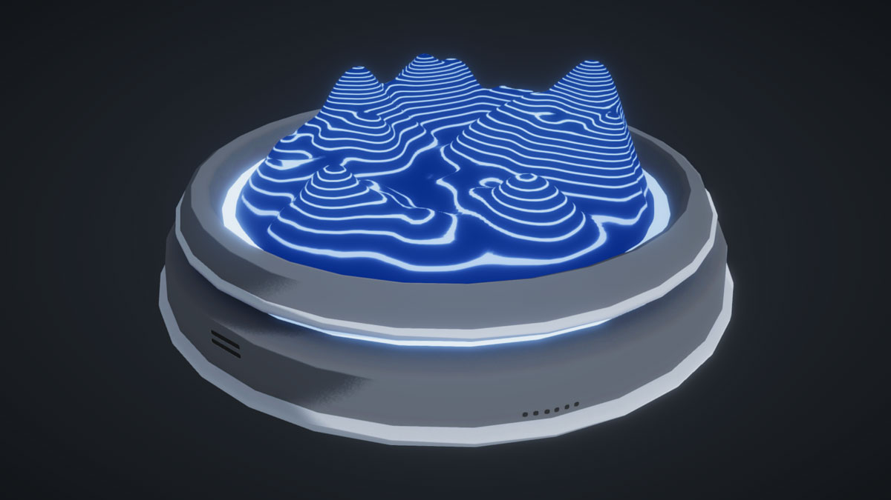
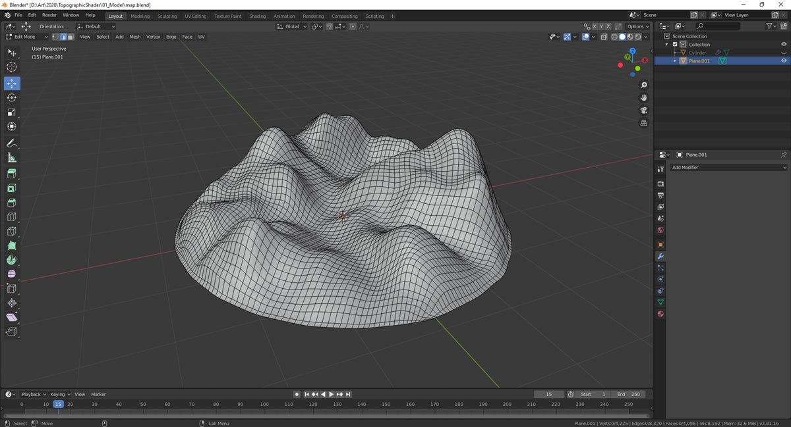
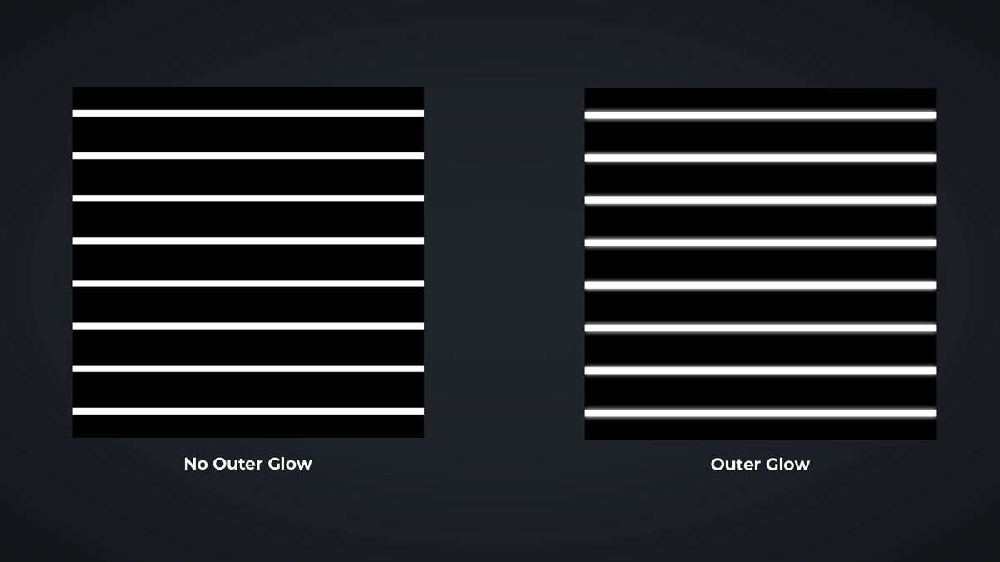
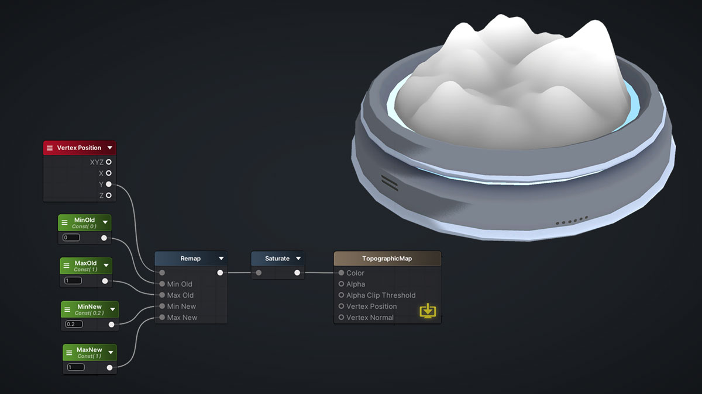
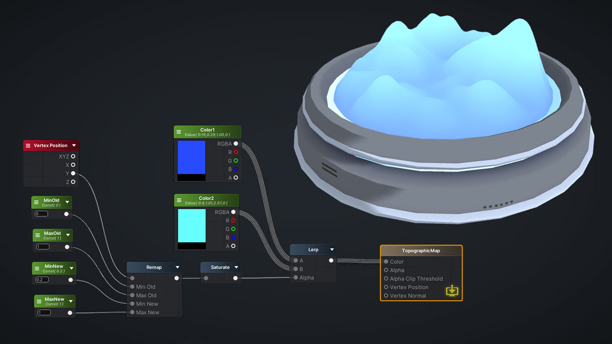
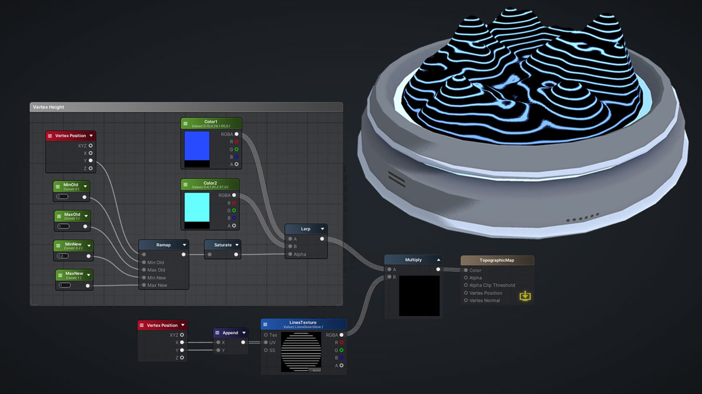
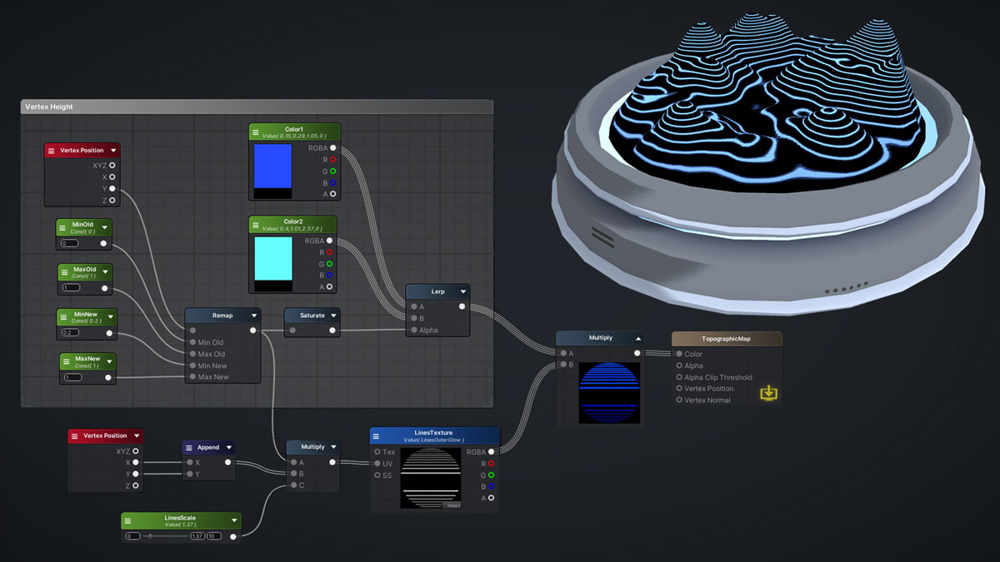
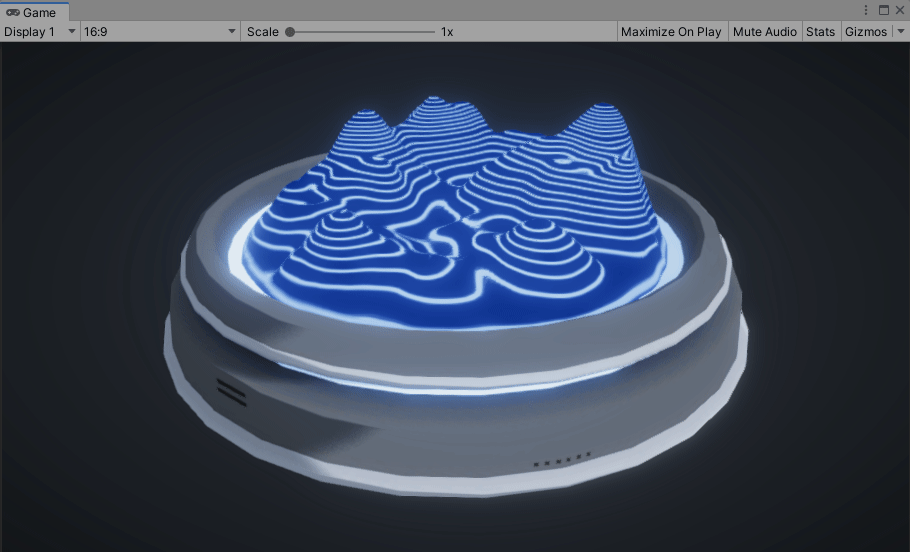
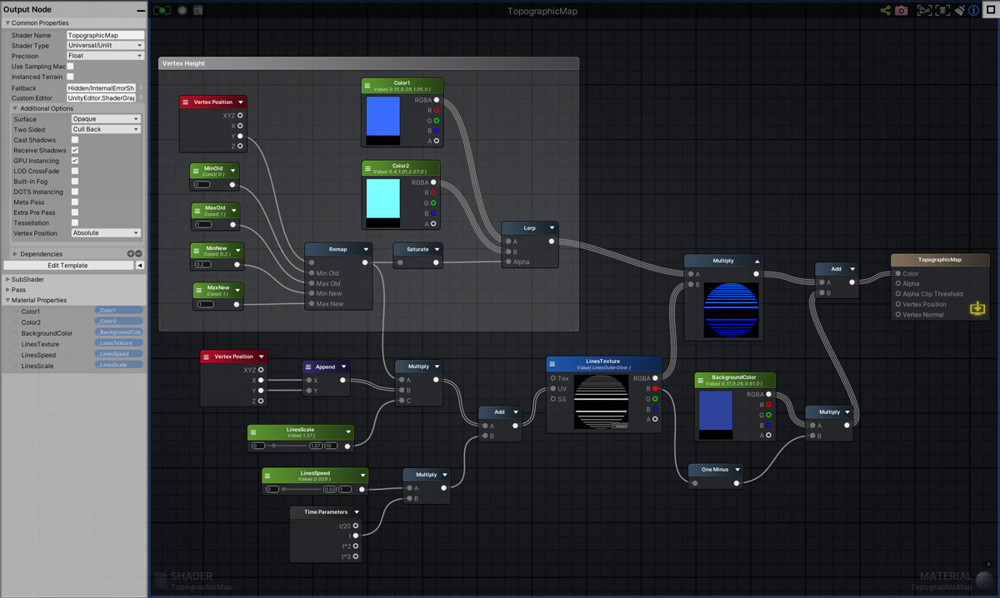

Topographic Map

This shader replicates the features of a topographic map, which use contour lines to represent the elevation and shape of the terrain. The main components used to achieve this effect are the local vertex position and vertically projecting the texture onto the mesh.
To create the mesh of the map, you can follow any tutorial to generate a terrain mesh. The mesh should have a good variety of tall peaks and low valleys so the change in elevation is obvious. Also, try to make sure it has enough polys to be smooth!
When exporting the mesh from the 3D software, make sure that Y-axis is set to be pointing up. This is important because our shader will be driven by the Y components of our vertex positions so they need to be oriented the right way! Also, make sure the map is placed right above the grid and apply it’s position. This will ensure that the vertex positions of the mesh are all positive.

For the texture, all we need is a texture with a bunch of equally spaced horizontal lines. We will deal with the line spacing in the shader so no need to worry about that now.
You could also add a little outer glow around the lines for a glowing effect.

The first step is to get a nice gradient in values from 0 to 1 that is driven by the y component of the Vertex Position. This will give us a gradient based on the height of the local vertex position with 1 being the highest and 0 being the lowest. I used the Remap node to adjust the gradient a bit so the minimum value is right above 0. I didn’t want the gradient to fade totally to black because of how it will affect the scaling of the line texture later.

The goal here is to get a smooth gradient where the whitest values are the peaks and the darkest values are the valleys. Don't forget to Saturate after to ensure the values are clamped from 0 to 1. Now, we can use this gradient to Lerp some colours! We will also be using this gradient to scale the tiling of the line texture.

We want to map the lines onto the mesh but instead of unwrapping the mesh, we can use part of the triplanar projection method to project the lines vertically onto the map. We only need the vertical portion of the triplanar mapping method since we just want the texture to be projected from the top. Append the X and Y values of the Vertex Position and this becomes the UV's for our texture!

Right now, the contour lines are consistent because we haven't taken our vertex height gradient into account yet. So we can simply Multiply our height gradient with our top-down projected line texture. This scales the line texture so at the peaks (where the height gradient values are closer to 1), the texture is scaled down and the lines are closer together. In the valleys (where the height gradient values are closer to 0), the texture is scaled up and the lines are farther apart. Multiply this with another float to adjust the overall scale of the lines.

We can take One Minus the lines and Multiply it with a Color to color the parts in between the lines. Finally, I panned the line texture using the equation Value=Value*Scale + Offset to give it some motion!

